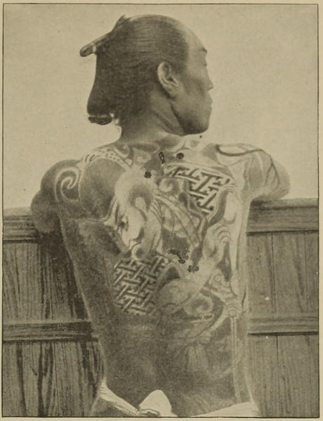

“A tattooed man”
Japan (1897)
I amused myself vastly with contemplating the back of the groom who sometimes preceded my horse, for it was really a study. ... A most elaborate subject, most cleverly tatooed, was what occupied my attention. It represented a Japanese, in full dress, seated in an arbour, as I judged by the profusion of red and blue flowers that appeared in all directions. He was playing the flute, the harmonious sounds of which were apparently exciting the admiration and delight of two ladies, who, with an immense number of pins in their hair, and dressed in the height of Japanese fashion, were standing near. We observed that this process of tatooing is very common about here. It is generally confined to the back, but not unfrequently extends the whole length of each arm, sometimes even embracing great part of the chest. The designs are of great variety—some purely floral, others including the bodies of dragons, snakes, &c.
A Lady’s Visit to Manilla and Japan (1863)
As we kept up a brisk trot wherever the road permitted it, our bettos gradually relieved themselves of the little clothing they had worn at the outset, and they now appeared in a costume worthy of a New Zealand chief. They were tattooed from head to foot, and there seemed to be as much rivalry among them as to whose back should present the most varied picture, as there was in out-doing each other in swiftness of foot. My betto, who was one of the fastest runners, was covered with an elaborate representation, in bright red and blue, of a lady and a dragon, the head of the latter peering forward over the right shoulder, while the body of the monster, extending down the man’s muscular back, wound its tail around the left leg and foot.
Across America and Asia (1870)
Another celebrated festival is the Feast of Lamps. When this takes place, processions of boats, brilliantly illuminated, move about the [Edo] harbour, and produce a striking effect. I have forgotten the name of the saint in whose honour the whole world was basking in the sun, doing nothing, when we went to Dai Cheenara, but the streets had never before seemed so crowded; flags waved from balconies, and strips of bright-coloured cotton, covered with characters, fluttered from poles; the women wore flowers in their hair, and the men had more on than usual. Some, however, denied themselves the benefit of dress, apparently for the purpose of exhibiting the brilliant patterns in which their skins were tatooed. One man had a monster crab in the small of his back, and a pretty cottage on his chest. It is rather fashionable to have scarlet fishes playing sportively between your shoulders. The scarlet tatooing presents a very disgusting appearance. The skin looks as if it had been carefully peeled off into the required pattern. On a really well tatooed man there is not an inch of the body which does not form part of a pictorial representation. If the general effect is not agreeable, it is perfectly decent, for the skin ceases to look bare, or like skin at all; it rather resembles a harlequin’s costume. It must be dreadful to feel that one can never undress again. Yet what anguish does the victim undergo, in order to put himself into a permanent suit of red dye and gunpowder!
Narrative of the Earl of Elgin’s Mission to China and Japan (1859)
A beautiful tattooing was the pride of the betto. Sometimes his whole body with the exception of head, forearms, and the lower segment of the legs, was covered with an artistic model of blue and red figures. But these bettos of the old school are becoming rarer now, since tattooing is considered no more in conformity with the civilisation of the country, and therefore forbidden by the Government. When the new law came into force, all tattooed people had to be registered, and any person now found with a new model on his body is at once prosecuted.
Japan As I Saw It (1912)
◀ NudityFood ▶